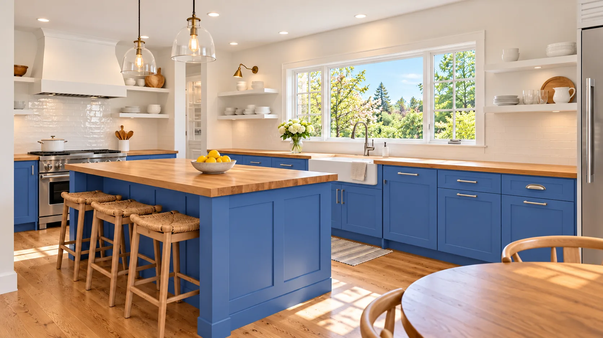

Kitchen Remodeling
Most of the kitchens we remodel are in houses built between the 1940s and the 1970s.
Learn moreRemodeling contractor in Edina, Richfield, St. Louis Park & Roseville
Common Ground remodels kitchens, bathrooms and whole floors of the houses Twin Cities families already live in, a lot of them 1950s ramblers and split-levels. We plan the work around your household, so you know which rooms you’ll lose, for how long, and what it costs before we start.
Over 500 rooms remodeled


What we do
Most of the kitchens we remodel are in houses built between the 1940s and the 1970s.
Learn more
From a tired hall bath the whole family shares to a new primary bathroom.
Learn more
When the problem isn’t one room but how the rooms connect.
Learn more“Before we picked a single cabinet, Alex asked how we cook, who’s home after school and where the dog sleeps. The kitchen works because of those questions.”
“They listened to all the little things that made our bathroom awkward. Mornings with two kids are a lot calmer now.”
“We could ask any question without feeling like we should already know the answer, and the crew left the house clean every day.”